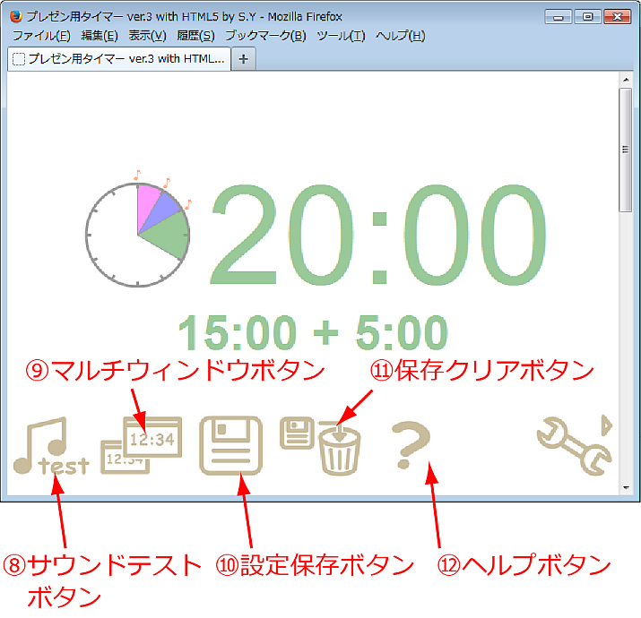

プレゼン用タイマーのヘルプ（Ver.5）
このタイマーは学会・プレゼン練習等に使えるタイマーです。HTML + Javascriptで作られているので、多くのWebブラウザで動作します。従って、複雑なインストールなど無しにどなたでも簡単に使うことができます。残り時間が数字に加えて時計の絵でも表示されるので、講演者にとって残り時間が分かりやすいタイマーです。また、直観的なユーザーインターフェースや、設定のプリセット機能（10件）、二つのウィンドウに表示する機能、設定の保存機能なども持っており、日常的なセミナーなどから本格的な学会にまで、幅広く利用できます。
操作方法
設定方法
timer.htmlをダブルクリックして、ブラウザで開きます。HTML5 + Canvasに対応していないブラウザでは動作しません。最新のブラウザであれば特に問題ないと思います。- ①メインウィンドウには現在の設定が表示されます。ボタン類はタイマーの下部にマウスカーソルを合わせると表示されます。
- 画面を下にスクロールして、時間などの設定をフォームに記入します。時間のフォームには、それぞれ、開始からベルを鳴らすまでの時間を記入します。タイマーが動いている間に表示する文字列やアラームを鳴らすかどうかも指定します。または、③プリセットボタンのいずれかを押して、設定を呼び出します。
- 文字の色を指定します。それぞれの色のフォームをクリックすると、下図のような色指定用のボックスが表示されるので、マーカーをドラッグして色を指定します。また、16進数を手で入力することもできます。
- 「プリセット」のプルダウンボックスから色のプリセットを選ぶと、作成者のお勧めの配色を一括で指定します。今のところ、「標準」「反転」「モノクロ」の3種があります。
タイマーのスタート・停止・リセット
- ②スタートボタンを押します。タイマーがスタートします。
- タイマーを一時停止する場合は⑤ポーズボタンを押します。
- 一時停止後、再開する場合は⑥再開ボタンを押します。リセットする場合は⑦リセットボタンを押します。
設定のプリセットとプリセットした設定の呼び出し
- プリセットボタンの上にマウスカーソルを移動すると、保存されている設定内容がメインウィンドウで確認できます。
- プリセットボタン0から9のいずれかを押すと、保存しておいた設定が呼び出されます。
- 設定内容を変更する場合は、画面を下にスクロールして、「Preset *の詳細を表示する」ボタンを押します（*は0から9までの数字）。するとフォームが表示されるので、そこに必要な設定内容を記入します。
その他の機能
- ⑤機能ボタンを押すと下の図のようにその他の機能のボタンが表示されます。もう一度押すと、元の画面に戻ります。

- ⑧サウンドテストボタンを押すと、ベル音のテストができます。PCの音量のテストなどに使って下さい。
- ⑨マルチウィンドウボタンを押すと、別のウィンドウが開き、2つのウィンドウにタイマーを表示できるようになります。研究会等でタイマーをスクリーンに投影する際などに便利です。
- ⑩設定保存ボタンを押すと、タイマーの設定内容とプリセット内容がブラウザに保存されます。設定を保存しておくと、一旦ブラウザを閉じても、設定内容やプリセット内容が保存されます。ブラウザによってはこの機能が使えない場合があります。
- ⑪保存クリアボタンを押すと、保存した内容を消去します。
- ⑫ヘルプボタンを押すとヘルプファイル（このファイル）を表示します。
既知の問題点
- 2015年01月現在、Internet Explorerでは、ローカルで動作させた場合（つまり、ファイルを自分のPCにダウンロードして起動した場合）に設定の保存が動作しません。
その他
- このプログラムは自己責任でお使い下さい。このプログラムによって生じた損害等の責任は作者は一切追わないものとします。
- 自由に使って頂いて構いませんが、使う際にご一報いただけたり感想を頂けたりすると作者が喜びます。特に、ご許可がいただけた場合は使用実績に掲載させて頂きます。
作者: 米澤進吾 http://www.ss.scphys.kyoto-u.ac.jp/person/yonezawa/index.html